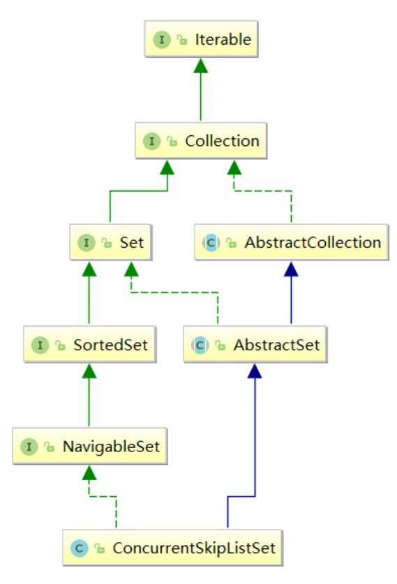
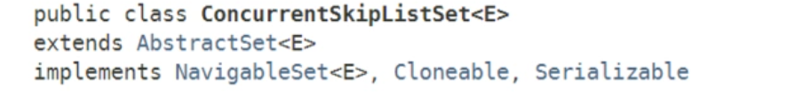

ConcurrentSkipListSet，是JDK1.6时J.U.C新增的一个集合工具类，顾名思义，它是一种SET类型。
一、简介
ConcurrentSkipListSet，是JDK1.6时J.U.C新增的一个集合工具类，顾名思义，它是一种SET类型。
SET类型，在数学上称为“集合”，具有互异性、无序性的特点，也就是说SET中的任意两个元素均不相同（即不包含重复元素），且元素是无序的。
是不是感觉和HashMap有点类似？HashMap中的Key也是不能重复，且是无序的。
事实上，JDK提供的默认SET实现——HashSet，其实就是采用“组合”的方式——内部引用了一个HashMap对象，以此实现SET的功能。
我们来看下ConcurrentSkipListSet的类继承图：

可以看到，ConcurrentSkipListSet实现了NavigableSet接口，在Java多线程进阶（二五）—— J.U.C之collections框架：ConcurrentSkipListMap中，我们提到过ConcurrentSkipListMap实现了NavigableMap接口，以提供和排序相关的功能，维持元素的有序性，所以ConcurrentSkipListSet就是一种为并发环境设计的有序SET工具类。

NavigableSet的功能和NavigableMap几乎是完全一样的，提供了根据指定Key返回最接近项、按升序/降序返回所有键的视图等功能。唯一的区别是NavigableSet针对的仅仅是键值，NavigableMap针对键值对进行操作。
二、原理
内部结构
ConcurrentSkipListSet的实现非常简单，其内部引用了一个ConcurrentSkipListMap对象，所有API方法均委托ConcurrentSkipListMap对象完成：
public class ConcurrentSkipListSet<E> extends AbstractSet<E>
implements NavigableSet<E>, Cloneable, java.io.Serializable {
/**
* The underlying map. Uses Boolean.TRUE as value for each
* element. This field is declared final for the sake of thread
* safety, which entails some ugliness in clone().
*/
private final ConcurrentNavigableMap<E, Object> m;
public ConcurrentSkipListSet() {
m = new ConcurrentSkipListMap<E, Object>();
}
public ConcurrentSkipListSet(Comparator<? super E> comparator) {
m = new ConcurrentSkipListMap<E, Object>(comparator);
}
public ConcurrentSkipListSet(Collection<? extends E> c) {
m = new ConcurrentSkipListMap<E, Object>();
addAll(c);
}
public ConcurrentSkipListSet(SortedSet<E> s) {
m = new ConcurrentSkipListMap<E, Object>(s.comparator());
addAll(s);
}
ConcurrentSkipListSet(ConcurrentNavigableMap<E, Object> m) {
this.m = m;
}
// ...
}从上述代码可以看出，ConcurrentSkipListSet在构造时创建了一个ConcurrentSkipListMap对象，并由字段m引用，所以其实ConcurrentSkipListSet就是一种跳表类型\的数据结构，其平均增删改查的时间复杂度均为O(logn)。
核心方法
我们来看下ConcurrentSkipListSet是如何实现API方法的：
public int size() {
return m.size();
}
public boolean isEmpty() {
return m.isEmpty();
}
public boolean contains(Object o) {
return m.containsKey(o);
}
public boolean add(E e) {
return m.putIfAbsent(e, Boolean.TRUE) == null;
}
public boolean remove(Object o) {
return m.remove(o, Boolean.TRUE);
}
public void clear() {
m.clear();
}
//...从上述代码可以看出，所有操作均是委托ConcurrentSkipListMap对象完成的。重点看下add方法：
public boolean add(E e) {
return m.putIfAbsent(e, Boolean.TRUE) == null;
}我们知道ConcurrentSkipListMap对键值对的要求是均不能为null，所以ConcurrentSkipListSet在插入元素的时候，用一个Boolean.TRUE对象（相当于一个值为true的Boolean型对象）作为value，同时putIfAbsent可以保证不会存在相同的Key。
所以，最终跳表中的所有Node结点的Key均不会相同，且值都是Boolean.True。